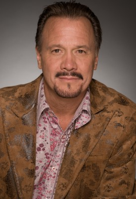

#10292 Run for Her Life
Alternativ: Inhale (Englischer Titel)

 IMDB-Wertung: 6.6 / 10
IMDB-Wertung: 6.6 / 10  Metascore: 39
Metascore: 39 
Anwalt Paul Chaney und seine Frau Diane warten in New Mexico händeringend auf einen passenden Organspender für ihre kranke Tochter Chloe. Durch Zufall erfahren sie von einem Dr. Novarro, der in der mexikanischen Grenzstadt Juarez illegal Transplantationen durchführt. Als sich Chloes Zustand dramatisch verschlechtert, macht sich der verzweifelte Paul auf die Suche nach Novarro.
Jahr: 2010
Dauer: 93 Minuten
FSK: 16
Land: USA Studio: IFC FilmsTonspuren: DTS - ,
Untertitel: Deutsch,
Auflösung: 1080p (1920x800) Größe: 5898 MB
Genre: Thriller, Drama
Regisseur: Baltasar Kormákur
Drehbuch: Walter Doty, John Claflin, Christian Escario
Soundtrack: James Newton Howard
Darsteller:
 Mia Stallard als Chloe
Mia Stallard als Chloe Dermot Mulroney als Paul Stanton
Dermot Mulroney als Paul Stanton Diane Kruger als Diane Stanton
Diane Kruger als Diane Stanton Sam Shepard als James Harrison
Sam Shepard als James Harrison Jordi Mollà als Aguilar
Jordi Mollà als Aguilar Vincent Perez als Dr. Martinez
Vincent Perez als Dr. Martinez Rosanna Arquette als Dr. Rubin
Rosanna Arquette als Dr. Rubin David Selby als Henry White
David Selby als Henry White- Kristyan Ferrer als Miguel
- Maria Bethke als Clinica Castillo Receptionist
- Louie Franco als Biker
- Judy Herrera als Claudia
- Jiji Hise als Mother Car Crash
- Nathalie Marciano als Carol Harrison
- Walter Perez als Arturo
- Greta Quezada als Clinica Nurse Castillo
- Manny Rubio als Juan
- Kat Sawyer als UNOS Rep
- Kieran Sequoia als TV Reporter
- Joseph Adams als FBI Agent
- Joshua R. Aragon als Inmate
- Kevin Christopher Brown als Physician (uncredited)
- Jesus Jr. als Obese Man (uncredited)
- Cesar Ramos als Ines
- Arlin Alcala als Centro Medico Juarez Receptionist
- Juan Avila als Camaronito
- Nick Banks als Dr. Sullivan
- Richard Barela als Hotel Clerk
- Daniel Barela als Used Car Salesman
- Paul Blott als Judge Jack Abrahams
- Todd Thatcher Cash als Scotty
- Abraham Chaidez als Luis Ruiz
- E. Ambriz DeColosio als Chepe
- Christian Escario als General #1
-  J.D. Garfield als Translator
- Carolyn Harvey als Old Flower Vendor
- Rafael Herrera als Surgeon
- Lisa Hill als Strip Club Waitress
- Rick La Monda als Prison Guard
- Celestia Loeffler als EMT
- Quinn Mason als Son in Car Crash
- Kahlil Mendez als Tico
- Gabriel 'Bam Bam' Merendon als Diego
- Nevarez Juarez als Gordo Adalberto
- Kim Larrichio als Marta
- Elmer Pacheco als Scraggly Dude
- Tamara Rose als Harrison's Secretary
- Kisha Sierra als Aguilar's Secretary
- James Tarwater als Matt Peckinsky
- Paco Vallejos als Priest Francisco
Datei: X:\2010(N-Z)\Run for Her Life (2010, FSK16, 1920x800).mkv seit 29.12.2018
Festplatte: HD 2010(G-Z)-2011(A-F)
 Es gibt insgesamt 115 Filme in der Gruppe '2010(N-Z)'
Es gibt insgesamt 115 Filme in der Gruppe '2010(N-Z)'